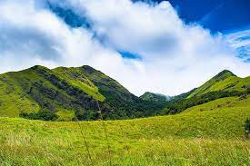
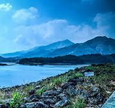
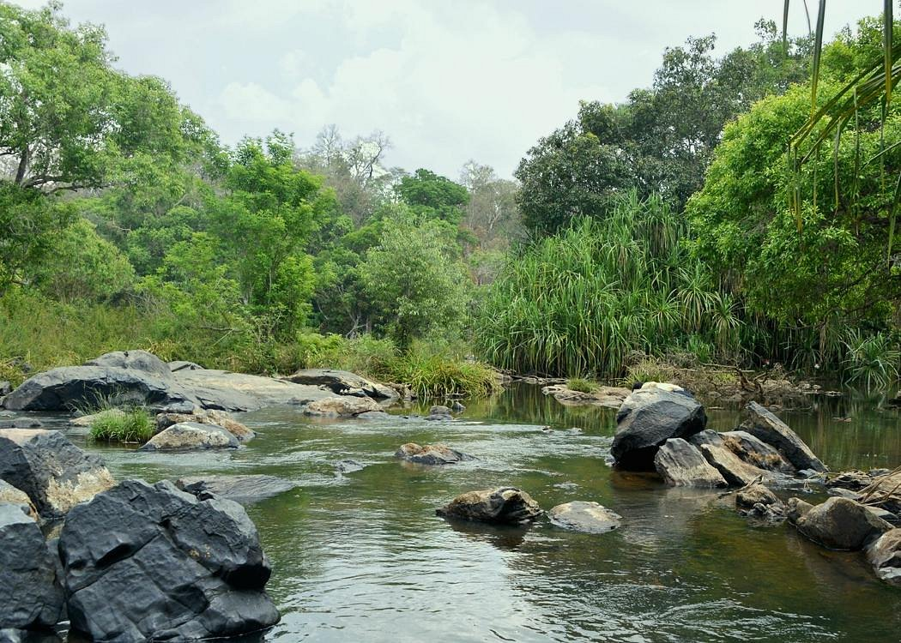

WAYANAD
Wayanad is a rural district in Kerala state, southwest India. In the east, the Wayanad Wildlife Sanctuary is a lush, forested region with areas of high altitude, home to animals including Asiatic elephants, tigers, leopards and egrets. In the Ambukuthi Hills to the south, Edakkal Caves contain ancient petroglyphs, some dating back to the Neolithic age

Banasura Sagar Dam
Another tourist attraction of Kalpetta is Banasura Sagar dam. It is the largest earth dam in India and the second largest of its kind in Asia. The dam is made up of massive stacks of stones and boulders.
Banasura Sagar Dam consisting of a dam and a canal began operating as part of the Indian Banasura Sagar Project. It aims at supporting the Kakkayam Hydro electric power project and also contributes to the irrigation and drinking water requirements of the people during summer, if there is water shortage.

SOOCHIPIRA WATERFALLS
Soochipara Falls (Sentinel Rock Waterfalls) is perhaps the most picturesque spot located in the periphery of Wayanad. It is a treat for eyes to see the milky white stream of water making its way to the rivers by passing through the rocky cliffs and clinging trees. The waterfall at the end joins Chaliyar River. Tourists will have to trek for around 30 minutes in downward inclination to reach the main pool, where exciting activities like swimming, bathing and other recreational activities take place now and then.
While walking towards the main pool of the waterfall, visitors can see tea plantation, rocky edge and dense forest where the chances of spotting a tiger are quite bright. Many guesthouses and homestays are available on the waterfall stretch that offers the striking view of the mountains. Soochipara Falls is the latest fad for the adventures because it serves as an ideal base for trekking and rock climbing. Although flow is greatest during the summer season, the best time for sunset photography is arguably winter as the water flow is not that heavy. Don't forget to see the panoramic view of the mountains from the tree-top hut

Kuruvadweep
Kuruva Island (or Kuruva Dweep) in Wayanad is a favourite among experience-seekers and photographers. It’s among the best tourist spots in Wayanad, known for its serenity and natural beauty. The island is uninhabited by humans, but it’s home to many other living species.
It’s a protected river delta, densely populated with rich flora and fauna. It’s formed by a cluster of islets in the middle of River Kabini.
Kuruva Island Kabini is replete with fresh air and green surroundings that mesmerise tourists. The islets are covered thick with evergreen forests and surrounded by river streams. And the place attracts no disturbance or pollution.
Those who have their eyes and ears for deep forest trekking, particularly like the nature walk opportunities on Kuruva island. While entry is closed during monsoon season, it’s flooded with tourists at other times of the year.
Its forest hosts many species of orchids and medicinal herbs, among other plants. You’ll also find several migratory birds. Animal sightings are rare, though.
Kuruva island is an untampered heaven shrouded in complete silence. Its pristine environment pulls many people to take a break from their daily hustle. A visit to the island will refresh both your body and mind.